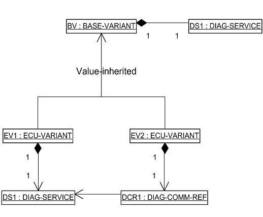

[ODXE-R1050-Files]
Usually, one ODX-File is exported per CANdela-File. This file then contains PROTOCOL-LAYER(s), a BASE-VARIANT, ECU-VARIANT(s).
With CANdela-Studio5.5 it is possible to export one file per DIAG-LAYER. I.e for each PROTCOL, BASE-VARIANT and ECU-VARIANT a separate file is exported. This can be toggled by an OdxExport-Option (Options).
With CANdelStudio 6.5 Release, the extension of the files for DIAG-LAYER-CONTAINERs is changed to "odx-d". This is to match the definitions in the ODX specification.
A CANdela base variant is exported to BASE-VARIANT and CANdela variants are exported to ECU-VARIANTs.
In CANdelaStudio 4.0 and higher the SHORT-NAME of the BASE-VARIANT is generated from the Qualifier of the CANdela Ecu since in ODX a BASE-VARIANT represents the Ecu. The LONG-NAME of the BASE-VARIANT is generated from the Ecu name in CANdela. The DESC subelement is generated from the description of the CANdela base variant.
SHORT-NAME, LONG-NAME and DESC of ECU-VARIANTs are generated from qualifier, name and description of the corresponding CANdela variant.
[ODXE-R1050-Unique]
In order to prevent violations of checker rule 56 CANdelaStudio offers the possibility to create ECU-VARIANT SHORT-NAMEs from a concatenation of the CANdela ECU qualifier and the variant qualifier. This feature is of special interest when several ECU descriptions shall be integrated in ODX vehicle project. The user may activate the feature by the option "Export unique ECU-VARIANT-SHORT-NAMEs".
For each IdentificationPattern in CANdela a ECU-VARIANT-PATTERN is created in ODX.
If PARAMs of a DIAG-SERVICE are used for variant identification the attribute DIAGNOSTIC-CLASS of DIAG-SERVICE is exported as follows: DIAGNOSTIC-CLASS = "VARIANTIDENTIFICATION".
With CANdela 8.0 it is also possible to use Jobs for Variant Identification. In this case, the DIAG-COMM-SNREF points to the SINGLE-ECU-JOB created from the CANdela-Job.
[ODXE-R1050-Inherit]
In order to describe diagnostic data without redundancy in CANdela, sharing of diagnostic instances or jobs and/or referencing is used. In ODX there are two mechanisms in order to avoid redundancy for DIAG-SERVICEs, SINGLE-ECU-JOBs and DIAG-VARIABLEs: Value inheritance between DIAG-LAYERs and Sharing/Referencing. The CANdela ODX export uses
Since CANdelaStudio 4.0 each BASE-VARIANT exported from a CANdela base variant has one parent-ref relation to each exported PROTOCOL.
Each ECU-VARIANT generated by a CANdela variant has a PARENT-REF to the BASE-VARIANT generated from the corresponding CANdela base variant. A DIAG-SERVICE generated from a CANdela service is only exported to an ECU-VARIANT if no equivalent DIAG-SERVICE was exported to the BASE-VARIANT. This holds for both services that are shared and services that were replaced by copies within the Variant but not modified. The CANdela services of diagnostic instances shared between the CANdela base variant and a CANdela variant are only exported as DIAG-SERVICE to the ODX BASE-VARIANT.

Value inheritance
The ODX element NOT-INHERITED-DIAG-COMMs at ECU-VARIANT/PARENT-REF lists all DIAG-SERVICEs and SINGLE-ECU-JOBs of the BASE-VARIANT which are not inherited in the ECU-VARIANT or not redefined in the ECU-VARIANT or not visible in the ECU-VARIANT by referencing to a DIAG-SERVICE/SIMPLE-ECU-JOB of another ECU-VARIANT.
With CANdela 6.0 Release a warning is emitted in case a DiagService used for VariantIdentification was modified in a variant.
CANdela services or jobs shared among variants (NOT with base variant, since base variant is handled by inheritance) are exported to one ECU-VARIANT. In the remaining variants that share the same DIAG-SERVICE or SINGLE-ECU-JOB, the ODX element DIAG-COMM-REF within the wrapper DIAG-COMMS is exported for each one.